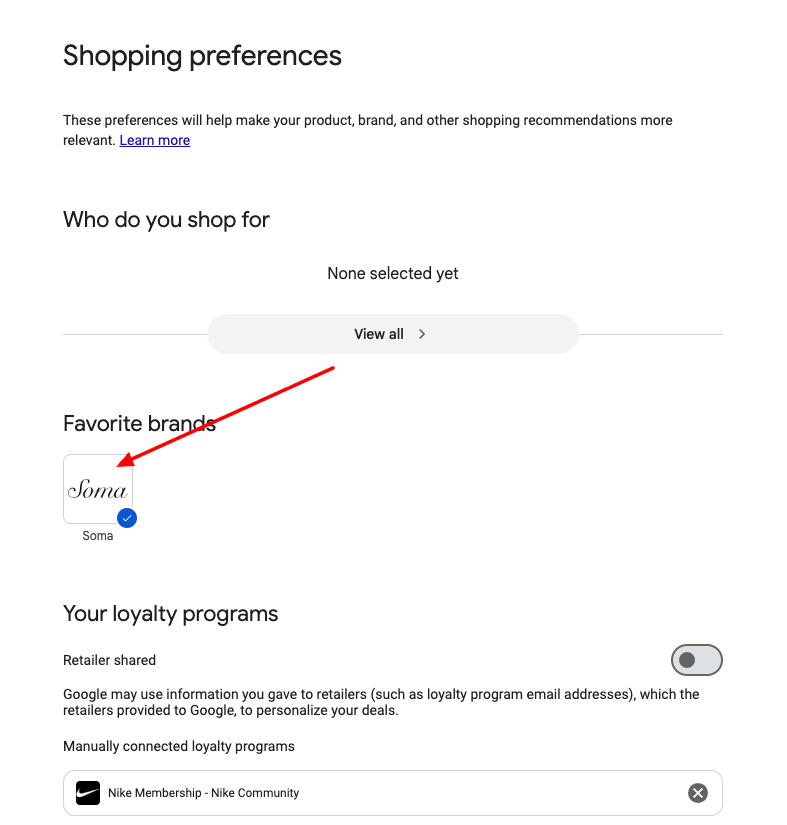

Search a generic term on Google. A widget appears: choose your favourite brand. You pick one. Now, the results for that same query are dominated by that brand's products. Google is personalising shopping results based on explicit brand preference, and it's doing so more and more.
This is not brand new. Barry Schwartz spotted it at Search Engine Roundtable when it first appeared in the wild, and Google has written about personalised search before. But I am seeing this feature a lot more lately, and the Shopping preferences panel where your brand selections are stored looks more developed than ever. It connects loyalty programmes now too. That makes it worth paying proper attention to.
What I saw
Mid-results, a widget appeared: "Save your favorite brands to get more relevant results." Below it, a horizontal row of brand tiles: Calvin Klein, Hanes, Aerie, Jockey, Victoria's Secret, H&M, Soma, and others. I selected Soma to see what would happen next.
Immediately below the Wikipedia result and this widget, a new section appeared: "Popular from your favorite brands", a carousel populated entirely with Soma products, prices, and ratings. A completely generic query, shaped into a personalised brand feed.
The widget also carries a three-dot menu linking to "Edit shopping preferences", which takes users to a dedicated Shopping preferences page. Navigating there, Soma was now saved as a tile with a blue checkmark, confirming the selection had been stored in the account. The settings page description reads: "These preferences will help make your product, brand, and other shopping recommendations more relevant."

How the personalisation pipeline works
The mechanics are straightforward:
- A user saves a brand in their Google Shopping preferences (either from the settings page or directly via the in-SERP widget)
- When that user later searches for a relevant category term ("underwear", "trainers", "coffee maker"), Google surfaces a personalised section pulled from their saved brands
- The brand widget in the SERP reflects their existing choices, with a blue tick on any already-saved brand
This is not just a UI experiment. It connects user identity (Google account), declared brand preference, and organic shopping results into a single loop. The preference persists across sessions and affects what that user sees on future searches.
The Preferred Sources parallel
This is not the first time Google has built a preference-driven personalisation layer. The Preferred Sources feature does exactly this for news and editorial content: users select which publications they want to see more of, and those selections influence Top Stories results.
Google even gives publishers a deep link to direct their audience directly to the preference-setting page:
https://google.com/preferences/source?q=yoursite.com
Publishers are encouraged to add this link to their social CTAs and on-site buttons, alongside a Google-provided badge asset. The brand favourites feature appears to be the same concept applied to retail: instead of editorial sources, you are selecting commercial brands. The underlying intent is identical, letting users shape their results around the sources they already trust.
Whether Google builds out an equivalent deep-link mechanism for brand preferences remains to be seen. For now, the only way to save a brand is through the in-SERP widget itself. There is no settings panel where users can proactively search and add brands. If this feature does roll out fully, a direct-link format like the one Preferred Sources uses would be the logical next step.
What brands should do
Even at the testing stage, the signal here is worth acting on. This is Google building a declared-interest channel between users and brands, and brands that move early on user awareness will have an advantage when (if) it becomes stable.
Make your audience aware the feature exists, starting with social
Most users will not know they can save favourite brands in Google. The people most likely to add you are the ones already following you. Brand social accounts are the obvious first move: an Instagram story, a TikTok, a pinned post on X. "Did you know you can save us as a favourite brand on Google so our products show up when you search?" is a concrete, zero-friction ask directed at an audience that has already chosen to follow you. Pair it with a newsletter mention and you are covering both the scroll-and-tap crowd and the inbox-loyal customers in one push.
Add a CTA where loyalty signals already exist
Your best candidates for brand-saving are existing customers: loyalty programme members, repeat buyers, email subscribers. These people are already choosing you over alternatives. A prompt at post-purchase, in a loyalty confirmation email, or on your account page asking them to add you in Google Shopping preferences is a natural extension of that relationship. Google has not yet provided a direct link to add a specific brand, so for now you are directing users to Shopping preferences and asking them to search for and save you manually. Worth noting that, given this is still a test, that extra step is the reality brands are working with today.
Treat it like a new loyalty channel
Google Shopping preferences already integrates with loyalty programmes directly. Users can connect their loyalty accounts in the same settings panel where they save brands. If your brand has a loyalty programme, there is a second hook here: getting users to connect their accounts means Google can potentially factor programme membership into shopping recommendations. Both signals point in the same direction. Being present in a user's Shopping preferences is a form of persistent, declared affinity that affects organic visibility.
What this means for SEO
If this feature rolls out broadly, organic shopping results will no longer be uniform across users. Two people searching the same query will see different products, not because of location or device but because of brand declarations they made in their Google account. That changes how you interpret Shopping performance data, and it changes what "organic visibility" means for a retail brand.
Impression and click data in Google Search Console will increasingly reflect a personalised reality rather than a universal one. Brands with strong affinity among their customer base, the kind that gets people to actively save them in preferences, will accrue a compounding advantage: more visibility for the people most likely to convert, while remaining normally visible to everyone else.
It is also worth watching how this interacts with Google Merchant Center feeds and Shopping ads. The preference layer sits on top of the organic product graph, but it is not yet clear whether declared brand preferences also influence paid Shopping results or just organic ones.
FAQ